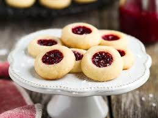

Back To Home
Jam Thumbprint Cookies

Makes 24 Cookies
Total Time: 45 Minutes, Plus 30 Minutes Cooling Time
Prepare Ingredients
- 1 cup plus 2 tablespoons all-purpose flour
- 1/4 teaspoon salt
- 1/4 teaspoon baking soda
- 1/8 teaspoon baking powder
- 6 tablespoons unsalted butter, cut into 6 pieces and softened
- 1/3 cup sugar
- 3 tablespoons cream cheese, softened
- 1 large egg yolk
- 3/4 teaspoon vanilla extract
- 1/3 cup jam(any flavor you want!)
Gather Baking Equipment
- Rimmed baking sheet
- Parchment paper
- Medium bowl
- Whisk
- Electric mixer(stand mixer with paddle attachment or handheld mixer and large bowl)
- Rubber spatula
- 1-teaspoon measuring spoon
- 1/2- teaspoon measuring spoon
- Oven mitts
- Cooling rack
Instructions
- Adjust oven rack to middle position and heat oven to 350 degrees. Line rimmed baking sheet with parchment paper.
- In medium bowl, whisk together flour, salt, baking soda, and baking powder.
- In bowl of stand micxer(or large bowl with handheld mixer), combine softened butter and sugar. If using stand mixer, lock bowl into place and attach paddle to stand mixer. Start mixer on medium-high speed and beat until fluffy, 3 to 4 minutes. Stop mixer and use rubber spatula to scrape down the sides of the bowl.
- Add cream cheese, egg yolk, and vanilla. Start mixer on medium speed and beat until mixture is just combined, about 30 seconds. Stop mixer.
- Carefully add flour mixture. Start mixer on low speed and beat until combined, about 30 seconds. Stop mixer. Remove bowl from stand mixer, if using.
- Use your hands to roll dough into 24 balls. Place dough balls on parchment-lined baking sheet, leaving space between balls.
- Shape and fill each cookie with jam(it should look like the photo above)
- Place baking sheet in oven. Bake cookies until light golden brown, 15 to 18 minutes.
- Use oven mitts to remove baking sheet from oven. Place baking sheet on cooling rack and let cookies cool completely on baking sheet, about 30 minutes. Serve